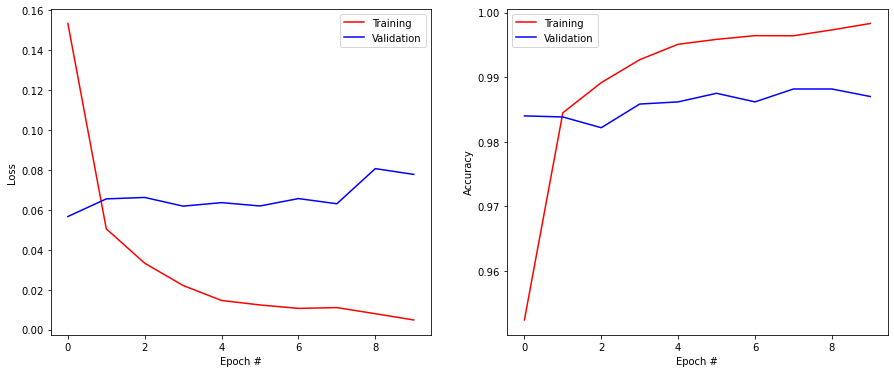
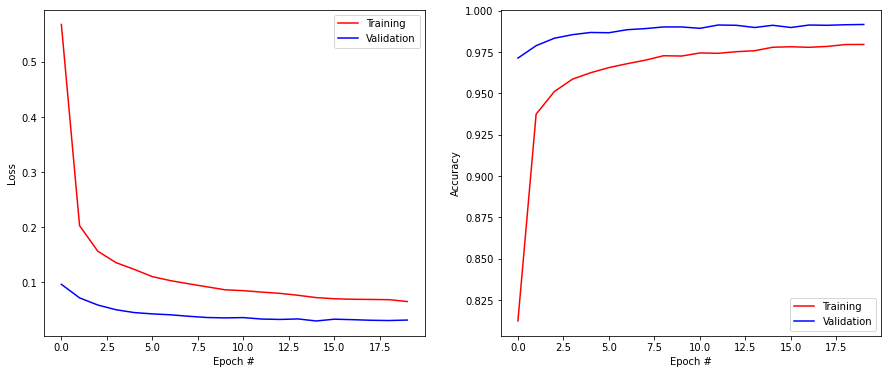
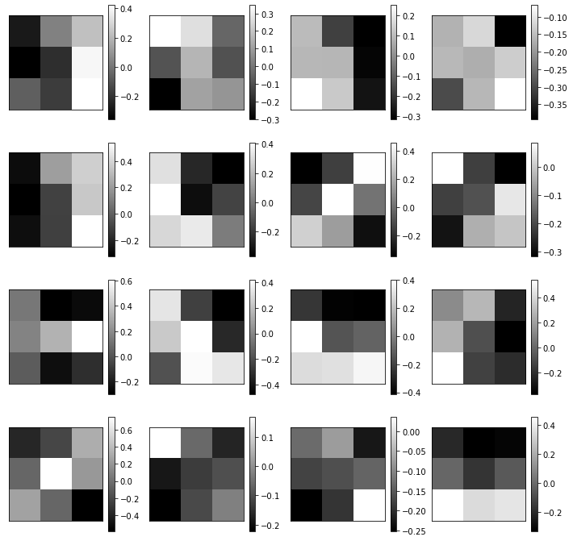
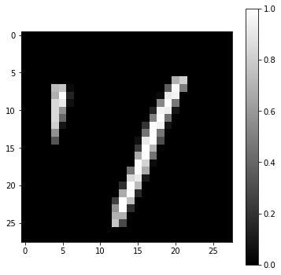
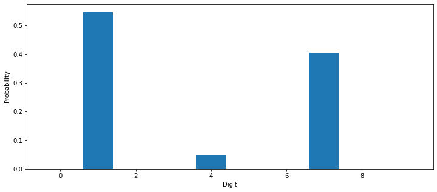
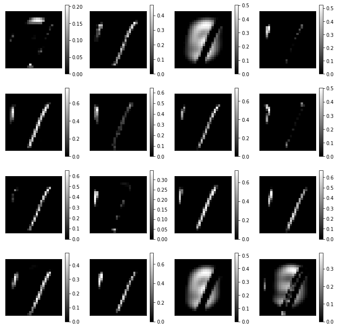
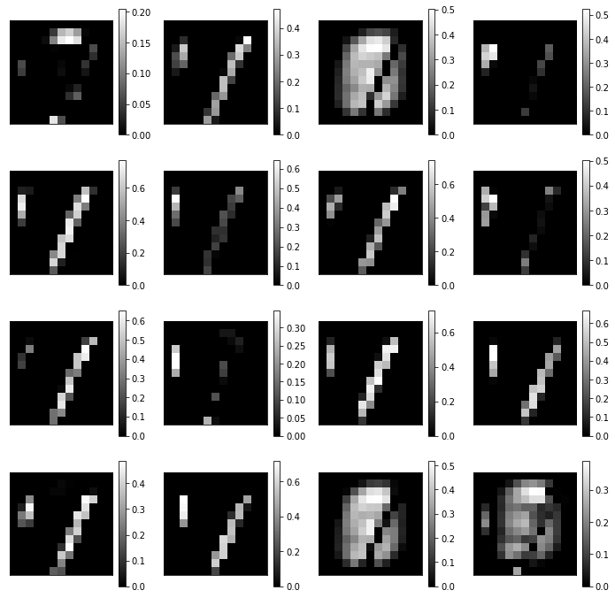
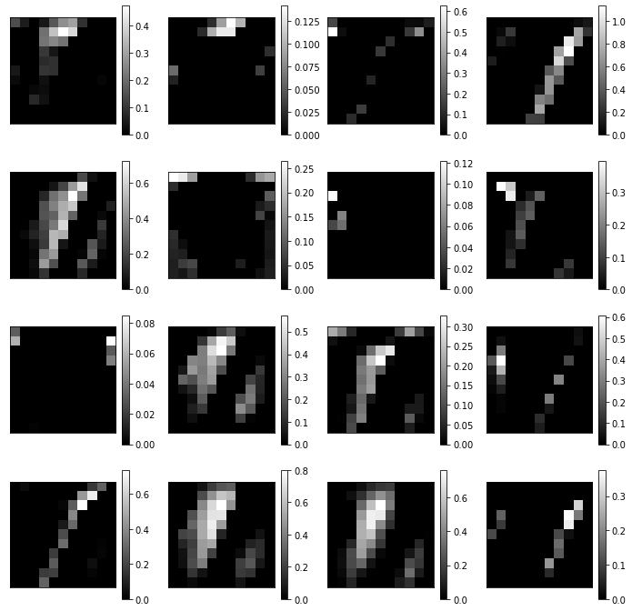

import numpy as np
import matplotlib.pyplot as plt
import tensorflow as tf
print(tf.__version__)2.7.0The goal of this exercise is to train a convolutional neural network on MNIST and better understand what is happening during training.
import numpy as np
import matplotlib.pyplot as plt
import tensorflow as tf
print(tf.__version__)2.7.0Tip: CNNs are much slower to train on CPU than the DNN of the last exercise. It is feasible to do this exercise on a normal computer, but if you have a Google account, we suggest to use colab to run this notebook on a GPU for free (training time should be divided by a factor 5 or so).
Go then in the menu, “Runtime” and “Change Runtime type”. You can then change the “Hardware accelerator” to GPU. Do not choose TPU, it will be as slow as CPU for the small networks we are using.
We import and normalize the MNIST data like last time, except we do not reshape the images: they stay with the shape (28, 28, 1):
# Fetch the MNIST data
(X_train, t_train), (X_test, t_test) = tf.keras.datasets.mnist.load_data()
print("Training data:", X_train.shape, t_train.shape)
print("Test data:", X_test.shape, t_test.shape)
# Normalize the values
X_train = X_train.reshape(-1, 28, 28, 1).astype('float32') / 255.
X_test = X_test.reshape(-1, 28, 28, 1).astype('float32') / 255.
# Mean removal
X_mean = np.mean(X_train, axis=0)
X_train -= X_mean
X_test -= X_mean
# One-hot encoding
T_train = tf.keras.utils.to_categorical(t_train, 10)
T_test = tf.keras.utils.to_categorical(t_test, 10)Training data: (60000, 28, 28) (60000,)
Test data: (10000, 28, 28) (10000,)We can now define the CNN defined in the first image:
The CNN will be trained on MNIST using SGD with momentum.
The following code defines this basic network in keras:
# Delete all previous models to free memory
tf.keras.backend.clear_session()
# Sequential model
model = tf.keras.models.Sequential()
# Input layer representing the (28, 28) image
model.add(tf.keras.layers.Input(shape=(28, 28, 1)))
# Convolutional layer with 16 feature maps using 3x3 filters
model.add(tf.keras.layers.Conv2D(16, (3, 3), padding='valid'))
model.add(tf.keras.layers.Activation('relu'))
# Max-pooling layerover 2x2 regions
model.add(tf.keras.layers.MaxPooling2D(pool_size=(2, 2)))
# Flatten the feature maps into a vector
model.add(tf.keras.layers.Flatten())
# Fully-connected layer
model.add(tf.keras.layers.Dense(units=100))
model.add(tf.keras.layers.Activation('relu'))
# Softmax output layer over 10 classes
model.add(tf.keras.layers.Dense(units=10))
model.add(tf.keras.layers.Activation('softmax'))
# Learning rule
optimizer = tf.keras.optimizers.SGD(learning_rate=0.1, decay=1e-6, momentum=0.9, nesterov=True)
# Loss function
model.compile(
loss='categorical_crossentropy', # loss function
optimizer=optimizer, # learning rule
metrics=['accuracy'] # show accuracy
)
print(model.summary())Metal device set to: Apple M1 Pro
systemMemory: 16.00 GB
maxCacheSize: 5.33 GB
2022-11-15 10:18:43.571203: I tensorflow/core/common_runtime/pluggable_device/pluggable_device_factory.cc:305] Could not identify NUMA node of platform GPU ID 0, defaulting to 0. Your kernel may not have been built with NUMA support.
2022-11-15 10:18:43.571329: I tensorflow/core/common_runtime/pluggable_device/pluggable_device_factory.cc:271] Created TensorFlow device (/job:localhost/replica:0/task:0/device:GPU:0 with 0 MB memory) -> physical PluggableDevice (device: 0, name: METAL, pci bus id: <undefined>)Model: "sequential"
_________________________________________________________________
Layer (type) Output Shape Param #
=================================================================
conv2d (Conv2D) (None, 26, 26, 16) 160
activation (Activation) (None, 26, 26, 16) 0
max_pooling2d (MaxPooling2D (None, 13, 13, 16) 0
)
flatten (Flatten) (None, 2704) 0
dense (Dense) (None, 100) 270500
activation_1 (Activation) (None, 100) 0
dense_1 (Dense) (None, 10) 1010
activation_2 (Activation) (None, 10) 0
=================================================================
Total params: 271,670
Trainable params: 271,670
Non-trainable params: 0
_________________________________________________________________
NoneNote the use of Flatten() to transform the 13x13x16 tensor representing the max-pooling layer into a vector of 2704 elements.
Note also the use of padding='valid' and its effect on the size of the tensor corresponding to the convolutional layer. Change it to padding='same' and conclude on its effect.
Q: Which layer has the most parameters? Why? Compare with the fully-connected MLPs you obtained during exercise 5.
A: conv layers have relatively few parameters (10 per filter). The main bottleneck is when going from convolutions to fully-connected.
Let’s now train this network on MNIST for 10 epochs, using minibatches of 64 images:
# History tracks the evolution of the metrics during learning
history = tf.keras.callbacks.History()
# Training procedure
model.fit(
X_train, T_train, # training data
batch_size=64, # batch size
epochs=10, # Maximum number of epochs
validation_split=0.1, # Perceptage of training data used for validation
callbacks=[history] # Track the metrics at the end of each epoch
)2022-11-15 10:19:02.344996: W tensorflow/core/platform/profile_utils/cpu_utils.cc:128] Failed to get CPU frequency: 0 Hz
2022-11-15 10:19:02.507957: I tensorflow/core/grappler/optimizers/custom_graph_optimizer_registry.cc:112] Plugin optimizer for device_type GPU is enabled.Epoch 1/10
843/844 [============================>.] - ETA: 0s - loss: 0.1535 - accuracy: 0.95232022-11-15 10:19:12.965693: I tensorflow/core/grappler/optimizers/custom_graph_optimizer_registry.cc:112] Plugin optimizer for device_type GPU is enabled.844/844 [==============================] - 11s 12ms/step - loss: 0.1534 - accuracy: 0.9524 - val_loss: 0.0566 - val_accuracy: 0.9840
Epoch 2/10
844/844 [==============================] - 10s 12ms/step - loss: 0.0505 - accuracy: 0.9845 - val_loss: 0.0655 - val_accuracy: 0.9838
Epoch 3/10
844/844 [==============================] - 10s 12ms/step - loss: 0.0332 - accuracy: 0.9891 - val_loss: 0.0662 - val_accuracy: 0.9822
Epoch 4/10
844/844 [==============================] - 10s 12ms/step - loss: 0.0221 - accuracy: 0.9927 - val_loss: 0.0618 - val_accuracy: 0.9858
Epoch 5/10
844/844 [==============================] - 10s 12ms/step - loss: 0.0146 - accuracy: 0.9951 - val_loss: 0.0636 - val_accuracy: 0.9862
Epoch 6/10
844/844 [==============================] - 10s 12ms/step - loss: 0.0123 - accuracy: 0.9959 - val_loss: 0.0619 - val_accuracy: 0.9875
Epoch 7/10
844/844 [==============================] - 10s 12ms/step - loss: 0.0106 - accuracy: 0.9964 - val_loss: 0.0656 - val_accuracy: 0.9862
Epoch 8/10
844/844 [==============================] - 10s 12ms/step - loss: 0.0110 - accuracy: 0.9964 - val_loss: 0.0630 - val_accuracy: 0.9882
Epoch 9/10
844/844 [==============================] - 10s 12ms/step - loss: 0.0079 - accuracy: 0.9973 - val_loss: 0.0807 - val_accuracy: 0.9882
Epoch 10/10
844/844 [==============================] - 10s 12ms/step - loss: 0.0048 - accuracy: 0.9983 - val_loss: 0.0778 - val_accuracy: 0.9870<keras.callbacks.History at 0x1769d37c0>As in the previous exercise, the next cells compute the test loss and accuracy and display the evolution of the training and validation accuracies:
score = model.evaluate(X_test, T_test, verbose=0)
print('Test loss:', score[0])
print('Test accuracy:', score[1])Test loss: 0.06820043921470642
Test accuracy: 0.9861000180244446plt.figure(figsize=(15, 6))
plt.subplot(121)
plt.plot(history.history['loss'], '-r', label="Training")
plt.plot(history.history['val_loss'], '-b', label="Validation")
plt.xlabel('Epoch #')
plt.ylabel('Loss')
plt.legend()
plt.subplot(122)
plt.plot(history.history['accuracy'], '-r', label="Training")
plt.plot(history.history['val_accuracy'], '-b', label="Validation")
plt.xlabel('Epoch #')
plt.ylabel('Accuracy')
plt.legend()
plt.show()
Q: What do you think of 1) the final accuracy and 2) the training time, compared to the MLP of last time?
Q: When does your network start to overfit? How to recognize it?
Q: Try different values for the batch size (16, 32, 64, 128..). What is its influence?
A: A CNN, even as shallow as this one, is more accurate but much slower (on CPU) than fully-connected networks. A network overfits when the training accuracy becomes better than the validation accuracy (learning by heart, not generalizing), which is the case here. When the batch size is too small, learning is unstable: the training loss increases again after a while. 128 is actually slightly better than 64.
Q: Improve the CNN to avoid overfitting. The test accuracy should be around 99%.
You can:
Beware: training is now relatively slow, keep your number of tries limited. Once you find a good architecture that does not overfit, train it for 20 epochs and proceed to the next questions.
# Delete all previous models to free memory
tf.keras.backend.clear_session()
# Sequential model
model = tf.keras.Sequential()
model.add(tf.keras.layers.Input((28, 28, 1)))
model.add(tf.keras.layers.Conv2D(32, (3, 3), activation='relu', padding='valid'))
model.add(tf.keras.layers.MaxPooling2D(pool_size=(2, 2)))
model.add(tf.keras.layers.Dropout(0.5))
model.add(tf.keras.layers.Conv2D(64, (3, 3), activation='relu', padding='valid'))
model.add(tf.keras.layers.MaxPooling2D(pool_size=(2, 2)))
model.add(tf.keras.layers.Dropout(0.5))
model.add(tf.keras.layers.Flatten())
model.add(tf.keras.layers.Dense(150, activation='relu'))
model.add(tf.keras.layers.Dropout(0.5))
model.add(tf.keras.layers.Dense(10, activation='softmax'))
# Learning rule
optimizer = tf.keras.optimizers.SGD(learning_rate=0.01, decay=1e-6, momentum=0.9, nesterov=True)
# Loss function
model.compile(
loss='categorical_crossentropy', # loss
optimizer=optimizer, # learning rule
metrics=['accuracy'] # show accuracy
)
print(model.summary())Model: "sequential"
_________________________________________________________________
Layer (type) Output Shape Param #
=================================================================
conv2d (Conv2D) (None, 26, 26, 32) 320
max_pooling2d (MaxPooling2D (None, 13, 13, 32) 0
)
dropout (Dropout) (None, 13, 13, 32) 0
conv2d_1 (Conv2D) (None, 11, 11, 64) 18496
max_pooling2d_1 (MaxPooling (None, 5, 5, 64) 0
2D)
dropout_1 (Dropout) (None, 5, 5, 64) 0
flatten (Flatten) (None, 1600) 0
dense (Dense) (None, 150) 240150
dropout_2 (Dropout) (None, 150) 0
dense_1 (Dense) (None, 10) 1510
=================================================================
Total params: 260,476
Trainable params: 260,476
Non-trainable params: 0
_________________________________________________________________
Nonehistory = tf.keras.callbacks.History()
model.fit(
X_train, T_train,
batch_size=64,
epochs=20,
validation_split=0.1,
callbacks=[history]
)Epoch 1/202022-11-15 10:21:29.499936: I tensorflow/core/grappler/optimizers/custom_graph_optimizer_registry.cc:112] Plugin optimizer for device_type GPU is enabled.844/844 [==============================] - ETA: 0s - loss: 0.4567 - accuracy: 0.85092022-11-15 10:21:42.950073: I tensorflow/core/grappler/optimizers/custom_graph_optimizer_registry.cc:112] Plugin optimizer for device_type GPU is enabled.844/844 [==============================] - 14s 16ms/step - loss: 0.4567 - accuracy: 0.8509 - val_loss: 0.0836 - val_accuracy: 0.9762
Epoch 2/20
844/844 [==============================] - 13s 15ms/step - loss: 0.1364 - accuracy: 0.9580 - val_loss: 0.0549 - val_accuracy: 0.9842
Epoch 3/20
844/844 [==============================] - 13s 15ms/step - loss: 0.1057 - accuracy: 0.9675 - val_loss: 0.0502 - val_accuracy: 0.9867
Epoch 4/20
844/844 [==============================] - 13s 15ms/step - loss: 0.0888 - accuracy: 0.9726 - val_loss: 0.0431 - val_accuracy: 0.9867
Epoch 5/20
844/844 [==============================] - 13s 15ms/step - loss: 0.0799 - accuracy: 0.9757 - val_loss: 0.0413 - val_accuracy: 0.9875
Epoch 6/20
844/844 [==============================] - 13s 15ms/step - loss: 0.0731 - accuracy: 0.9774 - val_loss: 0.0372 - val_accuracy: 0.9898
Epoch 7/20
844/844 [==============================] - 13s 15ms/step - loss: 0.0636 - accuracy: 0.9801 - val_loss: 0.0378 - val_accuracy: 0.9900
Epoch 8/20
844/844 [==============================] - 13s 15ms/step - loss: 0.0602 - accuracy: 0.9811 - val_loss: 0.0346 - val_accuracy: 0.9890
Epoch 9/20
844/844 [==============================] - 13s 15ms/step - loss: 0.0583 - accuracy: 0.9812 - val_loss: 0.0337 - val_accuracy: 0.9903
Epoch 10/20
844/844 [==============================] - 13s 15ms/step - loss: 0.0546 - accuracy: 0.9829 - val_loss: 0.0322 - val_accuracy: 0.9907
Epoch 11/20
844/844 [==============================] - 13s 15ms/step - loss: 0.0509 - accuracy: 0.9840 - val_loss: 0.0301 - val_accuracy: 0.9918
Epoch 12/20
844/844 [==============================] - 13s 15ms/step - loss: 0.0498 - accuracy: 0.9845 - val_loss: 0.0315 - val_accuracy: 0.9905
Epoch 13/20
844/844 [==============================] - 13s 15ms/step - loss: 0.0483 - accuracy: 0.9841 - val_loss: 0.0324 - val_accuracy: 0.9903
Epoch 14/20
844/844 [==============================] - 13s 15ms/step - loss: 0.0472 - accuracy: 0.9855 - val_loss: 0.0292 - val_accuracy: 0.9915
Epoch 15/20
844/844 [==============================] - 13s 15ms/step - loss: 0.0441 - accuracy: 0.9860 - val_loss: 0.0294 - val_accuracy: 0.9915
Epoch 16/20
844/844 [==============================] - 113s 134ms/step - loss: 0.0429 - accuracy: 0.9864 - val_loss: 0.0309 - val_accuracy: 0.9913
Epoch 17/20
844/844 [==============================] - 13s 15ms/step - loss: 0.0399 - accuracy: 0.9874 - val_loss: 0.0269 - val_accuracy: 0.9915
Epoch 18/20
844/844 [==============================] - 13s 15ms/step - loss: 0.0419 - accuracy: 0.9861 - val_loss: 0.0290 - val_accuracy: 0.9917
Epoch 19/20
844/844 [==============================] - 13s 15ms/step - loss: 0.0381 - accuracy: 0.9877 - val_loss: 0.0270 - val_accuracy: 0.9922
Epoch 20/20
844/844 [==============================] - 13s 15ms/step - loss: 0.0372 - accuracy: 0.9885 - val_loss: 0.0275 - val_accuracy: 0.9923<keras.callbacks.History at 0x17cf7f790>score = model.evaluate(X_test, T_test, verbose=0)
print('Test loss:', score[0])
print('Test accuracy:', score[1])Test loss: 0.019702225923538208
Test accuracy: 0.9937000274658203plt.figure(figsize=(15, 6))
plt.subplot(121)
plt.plot(history.history['loss'], '-r', label="Training")
plt.plot(history.history['val_loss'], '-b', label="Validation")
plt.xlabel('Epoch #')
plt.ylabel('Loss')
plt.legend()
plt.subplot(122)
plt.plot(history.history['accuracy'], '-r', label="Training")
plt.plot(history.history['val_accuracy'], '-b', label="Validation")
plt.xlabel('Epoch #')
plt.ylabel('Accuracy')
plt.legend()
plt.show()
Once a network has been trained, let’s see what has happened internally.
Each layer of the network can be addressed individually. For example, model.layers[0] represents the first layer of your network (the first convolutional one, as the input layer does not count). The index of the other layers can be found by looking at the output of model.summary().
You can obtain the parameters of each layer (if any) with:
W = model.layers[0].get_weights()[0]Q: Print the shape of these weights and relate them to the network.
W = model.layers[0].get_weights()[0]
print("W shape : ", W.shape)W shape : (3, 3, 1, 32)Q: Visualize with imshow() each of the 16 filters of the first convolutional layer. Interpret what kind of operation they perform on the image.
Hint: subplot() is going to be useful here. If you have 16 images img[i], you can visualize them in a 4x4 grid with:
for i in range(16):
plt.subplot(4, 4, i+1)
plt.imshow(img[i], cmap=plt.cm.gray)plt.figure(figsize=(12, 12))
for i in range(16):
plt.subplot(4, 4, i+1)
plt.imshow(W[:, :, 0, i], cmap=plt.cm.gray)
plt.xticks([]); plt.yticks([])
plt.colorbar()
plt.show()
Let’s take a random image from the training set and visualize it:
idx = 31727 # or any other digit
x = X_train[idx, :, :, :].reshape(1, 28, 28, 1)
t = t_train[idx]
print(t)
plt.figure(figsize=(6, 6))
plt.imshow(x[0, :, :, 0] + X_mean[:, :, 0], cmap=plt.cm.gray)
plt.colorbar()
plt.show()1
This example could be a 1 or 7. That is why you will never get 100% accuracy on MNIST: some examples are hard even for humans…
Q: Print what the model predict for it, its true label, and visualize the probabilities in the softmax output layer (look at the doc of model.predict()):
# Predict probabilities
output = model.predict([x])
# The predicted class has the maximal probability
prediction = output[0].argmax()
print('Predicted digit:', prediction, '; True digit:', t)
plt.figure(figsize=(12, 5))
plt.bar(range(10), output[0])
plt.xlabel('Digit')
plt.ylabel('Probability')
plt.show()2022-11-15 10:28:07.144889: I tensorflow/core/grappler/optimizers/custom_graph_optimizer_registry.cc:112] Plugin optimizer for device_type GPU is enabled.Predicted digit: 1 ; True digit: 1
Depending on how your network converged, you may have the correct prediction or not.
Q: Visualize the output of the network for different examples. Do these ambiguities happen often?
Now let’s look inside the network. We will first visualize the 16 feature maps of the first convolutional layer.
This is actually very simple using tensorflow 2.x: One only needs to create a new model (class tf.keras.models.Model, not Sequential) taking the same inputs as the original model, but returning the output of the first layer (model.layers[0] is the first convolutional layer of the model, as the input layer does not count):
model_conv = tf.keras.models.Model(inputs=model.inputs, outputs=model.layers[0].output)To get the tensor corresponding to the first convolutional layer, one simply needs to call predict() on the new model:
feature_maps = model_conv.predict([x])Q: Visualize the 16 feature maps using subplot(). Relate these activation with the filters you have visualized previously.
model_conv = tf.keras.models.Model(inputs=model.inputs, outputs=model.layers[0].output)
feature_maps = model_conv.predict([x])
print(feature_maps.shape)
plt.figure(figsize=(12, 12))
for i in range(16):
plt.subplot(4, 4, i+1)
plt.imshow(feature_maps[0, :, :, i], cmap=plt.cm.gray)
plt.xticks([]); plt.yticks([])
plt.colorbar()
plt.show()2022-11-15 10:28:38.895124: I tensorflow/core/grappler/optimizers/custom_graph_optimizer_registry.cc:112] Plugin optimizer for device_type GPU is enabled.(1, 26, 26, 32)
Q: Do the same with the output of the first max-pooling layer.
Hint: you need to find the index of that layer in model.summary().
model_pool = tf.keras.models.Model(inputs=model.inputs, outputs=model.layers[1].output)
pooling_maps = model_pool.predict([x])
print(pooling_maps.shape)
plt.figure(figsize=(12, 12))
for i in range(16):
plt.subplot(4, 4, i+1)
plt.imshow(pooling_maps[0, :, :, i], cmap=plt.cm.gray)
plt.xticks([]); plt.yticks([])
plt.colorbar()
plt.show()2022-11-15 10:28:50.513222: I tensorflow/core/grappler/optimizers/custom_graph_optimizer_registry.cc:112] Plugin optimizer for device_type GPU is enabled.(1, 13, 13, 32)
Bonus question: if you had several convolutional layers in your network, visualize them too. What do you think of the specificity of some features?
model_conv = tf.keras.models.Model(inputs=model.inputs, outputs=model.layers[3].output)
feature_maps = model_conv.predict([x])
print(feature_maps.shape)
plt.figure(figsize=(12, 12))
for i in range(16):
plt.subplot(4, 4, i+1)
plt.imshow(feature_maps[0, :, :, i], cmap=plt.cm.gray)
plt.xticks([]); plt.yticks([])
plt.colorbar()
plt.show()2022-11-15 10:28:59.341295: I tensorflow/core/grappler/optimizers/custom_graph_optimizer_registry.cc:112] Plugin optimizer for device_type GPU is enabled.(1, 11, 11, 64)